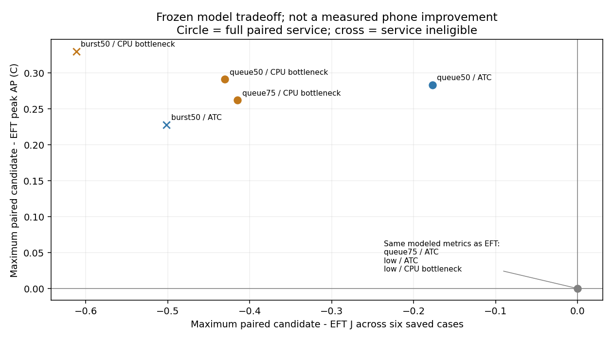

새 시뮬레이션·실측0. 각 block/입력의 동일seed·3처리문맥만 대조했습니다. 아래 여유는 조건부 산술이며 물리적 보장·정확도 기준·새 정책 채택이 아닙니다.
총 J 차이 = 모형 J 차이 + 미모형화된 차등 비용. 절감을 남기려면 추가 차등 비용이 표의 양의 J 여유보다 작아야 합니다. 동일한 여유가 앞으로의 입력에도 유지된다는 보장은 없습니다. 일정이 달라질 때의 시간·AP 영향과 측정 오차는 별도 미확인입니다.
AP 상한 필요량은 기존 EFT 대비 저장된 최대 차이입니다. 사용자 허용폭·안전기준·정확도 합격선으로 채택하지 않았습니다. 응답 여유는 당시 최소 기한잔여이며 제어기의 허용 추가 지연이 아닙니다. EFT의 기록된 계산시간0은 계측 부재였으므로 null로 표시했습니다.
묶음 CSV · 사례별 비용·응답 여유 · 원 비교·한계·재현

| comparison_block | envelope | policy | deadline_met | planned | paired_full_service | minimum_saved_energy_budget_j | maximum_required_peak_AP_cap_c | maximum_required_AP_area_cap_c_s | minimum_saved_response_slack_ms | joint_modeled_improvement |
|---|---|---|---|---|---|---|---|---|---|---|
| run_v1 | g0.15_c0.5_b8 | ATC_QUEUED_GUARD_V1 | 207 | 288 | False | 미판정 / null | 미판정 / null | 미판정 / null | -4481.692944 | False |
| run_v1 | g0.15_c0.5_b8 | CPU_BOTTLENECK_GUARD_V1 | 217 | 288 | False | 미판정 / null | 미판정 / null | 미판정 / null | -4156.628694 | False |
| run_v1 | g0.15_c0.5_b8 | EFT_REFERENCE | 168 | 288 | False | 미판정 / null | 미판정 / null | 미판정 / null | -6529.235154 | False |
| run_v1 | g0.45_c0.5_b4 | ATC_QUEUED_GUARD_V1 | 288 | 288 | True | 0.177365 | 0.283401 | 7.473288 | 632.054621 | False |
| run_v1 | g0.45_c0.5_b4 | CPU_BOTTLENECK_GUARD_V1 | 288 | 288 | True | 0.430421 | 0.291083 | 9.852405 | 663.191489 | False |
| run_v1 | g0.45_c0.5_b4 | EFT_REFERENCE | 288 | 288 | True | 미판정 / null | 0.0 | 0.0 | 776.53662 | False |
| run_v1 | g0.45_c0.75_b4 | ATC_QUEUED_GUARD_V1 | 288 | 288 | True | 미판정 / null | 0.0 | 0.0 | 775.950759 | False |
| run_v1 | g0.45_c0.75_b4 | CPU_BOTTLENECK_GUARD_V1 | 288 | 288 | True | 0.414962 | 0.261954 | 8.158515 | 775.950759 | False |
| run_v1 | g0.45_c0.75_b4 | EFT_REFERENCE | 288 | 288 | True | 미판정 / null | 0.0 | 0.0 | 775.950759 | False |
| run_v1 | g1.2_c0.5_b1 | ATC_QUEUED_GUARD_V1 | 288 | 288 | True | 미판정 / null | 0.0 | 0.0 | 1343.820069 | False |
| run_v1 | g1.2_c0.5_b1 | CPU_BOTTLENECK_GUARD_V1 | 288 | 288 | True | 미판정 / null | 0.0 | 0.0 | 1343.820069 | False |
| run_v1 | g1.2_c0.5_b1 | EFT_REFERENCE | 288 | 288 | True | 미판정 / null | 0.0 | 0.0 | 1343.820069 | False |
| beam_v1 | g0.15_c0.5_b8 | EFT_REFERENCE | 184 | 288 | False | 미판정 / null | 미판정 / null | 미판정 / null | -6514.378723 | False |
| beam_v1 | g0.15_c0.5_b8 | PARETO_BEAM_SERVICE_V1 | 180 | 288 | False | 미판정 / null | 미판정 / null | 미판정 / null | -6417.606019 | False |
| beam_v1 | g0.45_c0.5_b4 | EFT_REFERENCE | 288 | 288 | True | 미판정 / null | 0.0 | 0.0 | 777.175071 | False |
| beam_v1 | g0.45_c0.5_b4 | PARETO_BEAM_SERVICE_V1 | 257 | 288 | False | 미판정 / null | 미판정 / null | 미판정 / null | -432.255971 | False |
| beam_v1 | g0.45_c0.75_b4 | EFT_REFERENCE | 288 | 288 | True | 미판정 / null | 0.0 | 0.0 | 778.379424 | False |
| beam_v1 | g0.45_c0.75_b4 | PARETO_BEAM_SERVICE_V1 | 283 | 288 | False | 미판정 / null | 미판정 / null | 미판정 / null | -236.475177 | False |
| beam_v1 | g1.2_c0.5_b1 | EFT_REFERENCE | 288 | 288 | True | 미판정 / null | 0.0 | 0.0 | 1343.820069 | False |
| beam_v1 | g1.2_c0.5_b1 | PARETO_BEAM_SERVICE_V1 | 288 | 288 | True | 0.335169 | 0.175716 | 6.918604 | 93.820069 | False |
| beam_v2 | g0.15_c0.5_b8 | EFT_REFERENCE | 160 | 288 | False | 미판정 / null | 미판정 / null | 미판정 / null | -6710.190157 | False |
| beam_v2 | g0.15_c0.5_b8 | PARETO_BEAM_IMMEDIATE_V2 | 158 | 288 | False | 미판정 / null | 미판정 / null | 미판정 / null | -6407.069481 | False |
| beam_v2 | g0.45_c0.5_b4 | EFT_REFERENCE | 288 | 288 | True | 미판정 / null | 0.0 | 0.0 | 789.69398 | False |
| beam_v2 | g0.45_c0.5_b4 | PARETO_BEAM_IMMEDIATE_V2 | 288 | 288 | True | 미판정 / null | 0.0 | 0.0 | 789.69398 | False |
| beam_v2 | g0.45_c0.75_b4 | EFT_REFERENCE | 288 | 288 | True | 미판정 / null | 0.0 | 0.0 | 777.828654 | False |
| beam_v2 | g0.45_c0.75_b4 | PARETO_BEAM_IMMEDIATE_V2 | 288 | 288 | True | 미판정 / null | 0.0 | 0.0 | 777.828654 | False |
| beam_v2 | g1.2_c0.5_b1 | EFT_REFERENCE | 288 | 288 | True | 미판정 / null | 0.0 | 0.0 | 1343.820069 | False |
| beam_v2 | g1.2_c0.5_b1 | PARETO_BEAM_IMMEDIATE_V2 | 288 | 288 | True | 미판정 / null | 0.0 | 0.0 | 1343.820069 | False |